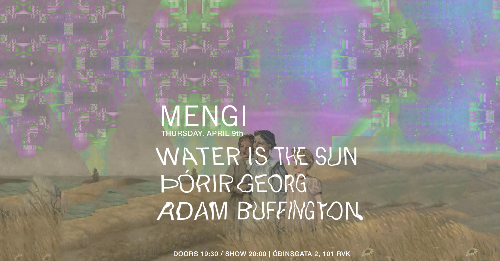
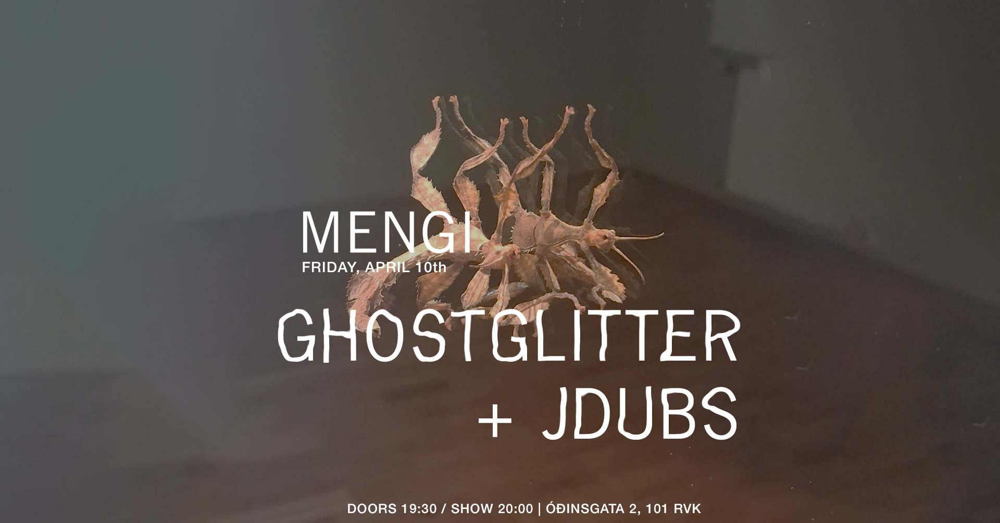
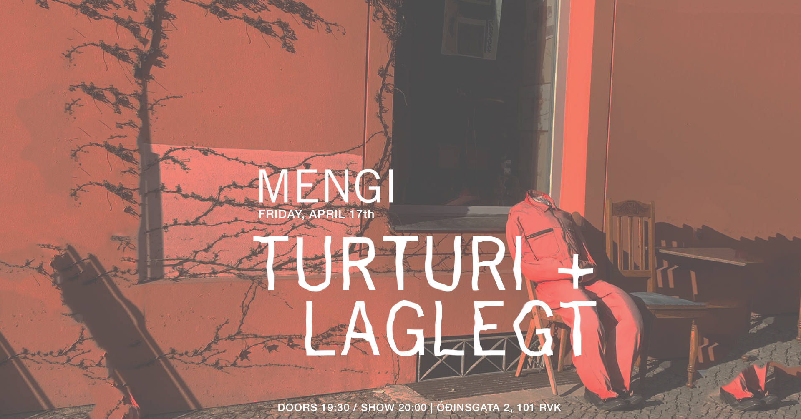

Upcoming Events

THU 09.04 Water Is The Sun/Þórir Georg/Adam Buffington
Tickets Thursday, April 9th WATER IS THE SUN ÞÓRIR GEORG ADAM BUFFINGTON doors 19:30 / show 20:00 2500kr / 2000kr students / pay what u can Water is the Sun is the inevitable union of Mkl Anderson (Drekka), and Adam Parks (Timber Rattle / Lightning White Bison). Together they play an alchemical amalgam of their primary projects, resulting in cinematic / landscape textures that give slow birth to psyche-pastorals and intoned ritual songs; a music as informed by the devotional chants of West Coast cults and Appalachian hymns as it is by the dark new age and ambient resonance of the experimental scene that has embraced and supported both musicians for many years. Þórir Georg is a veteran of icelandic underground, extreme and experimental music. In the last 25 years or so he has pushed his exploration of song and sound further and wider than most would consider sensible. Having made a habit of eschewing all notions of success and careerism in favor of artistic satisfaction he remains lurking in the shadows of the underground. Adam Buffington is an American sound diarist and composer living in Reykjavík, Iceland. With one foot in the hallowed halls of high art and the other in the gutters of industrial experimentation he cobbles together sound collages that tear down the thin veil seperating the absurd and the mundane.

FRI 10.04 Ghostglitter / Jdubs
Tickets Friday, April 10th GHOSTGLITTER / JDUBS doors 19:30 / show 20:00 2500kr / 2000kr students / pay what u can ghostglitter is the new band from musicians Ásthildur Ákadóttir and Brynjar Daðason. Ásthildur is a musician with a background in classical piano who rose to indie fame a few years ago with her critically acclaimed band Pascal Pinon. She has also played in various contemporary projects like for example Steinalda. Brynjar is a guitarist/composer who has released solo music, collaborated with various artists and worked on film music and art installations. He released his debut record Pretty Late via Mengi Records in 2021. Jdubs is the performing alias of producer and synth designer Joshua Wilkinson. His performances use live improvisation on modular synthesisers using a self built sequencer called Tetrachords. The music often revolves around minimal drawn out explorations of simple chord sequences with complex voicing. Like many pictures of the same thing.

FRI 17.04 Turturi / Laglegt
Tickets Friday, April 17th TURTURI / LAGLEGT doors 19:30 / show 20:00 2500kr / 2000kr students / pay what u can Join us for a dreamy night of bubbles, singing pebbles and a little bit of mystery as Turturi and Laglegt play on a wonderful Friday evening. Turturi er hljómsveit staðsett í Reykjavík og hefur meðal annars komið fram á tónleikum Upprásarinnar í Hörpu og tónlistarhátíðinni Hátíðni, ásamt fleiri tónleikum víðsvegar á höfuðborgarsvæðinu. Stíl Turtura má lýsa sem nýbylgjupoppi, krúttdjassi og tilraunapönki, þó að meðlimir gefi sér svigrúm til að kanna ótroðnar slóðir þegar lagasmíðin krefst þess. Þá fá lögin að fara sína náttúrulegu leið. Hljómsveitin er eins og stendur að undirbúa sína fyrstu breiðskífu og mun koma henni ásamt fleiri lögum á framfæri í lifandi flutningi í Mengi. Laglegt er listamannanafn Sigríðar Langdal. Laglegt tók að vekja athygli þegar hún deildi hráum upptökum (voice memo) af lögum sem hún hafði verið að semja á Soundcloud. Yrkisefni textanna sækir Laglegt í tilfinningar svo sem ástarsorg og samfélagslegar hindranir. Sorgartextana setur hún svo við líflegar laglínur og stígur á stokk með gítar í hendi. ______________________________________ Turturi is a band based in Reykjavík and has played concerts such as Upprásin in Harpa and the music festival Hátíðni, along with multiple venues around Reykjavík. Turturi’s style can be described as new wave pop, cute jazz and experimental punk- although the band members like to give space for exploration of new untrodden paths, if the songwriting journey requires it. Turturi is now preparing for its debut album and the to-be-released catalogue along with fresh material will be performed at Mengi. Laglegt is the artist name of Sigríður Langdal. Laglegt started grabbing people’s attention when she started sharing raw recordings of her songwriting onto Soundcloud. The lyrical material draws inspiration from feelings such as heartbreak and societal obstacles. The somewhat sorrowful texts are then packaged in lively and upbeat melodies along with dreamy guitar-playing.

THU 23.04 Berglind María Tómasdóttir feat. Júlía Mogensen
Tickets Thursday, April 23rd BERGLIND MARÍA TÓMASDÓTTIR feat. JÚLÍA MOGENSEN doors 19:30 / show 20:00 2500kr / 2000kr students / pay what u can Berglind María Tómasdóttir leikur nýtt og eldra efni í bland við spuna og mögulega eitthvað alveg óvænt. Flautur og fleiri hljóðgjafar koma við sögu. Sérlegur gestur á tónleikunum er Júlía Mogensen, sellóleikari og dórófónleikari. Berglind María Tómasdóttir er flautuleikari og tónskáld sem vinnur þvert á miðla. Í verkum sínum kannar hún ímyndir, erkitýpur og tónlist sem félagslegt fyrirbæri. Sem flautuleikari hefur Berglind komið fram víðs vegar um heim og leikið inn á fjölda hljóðrita, meðal annars sem einleikari ásamt Sinfóníuhljómsveit Íslands undir stjórn Vladimir Ashkenazy. Plata hennar Ethereality var valin plata ársins á Íslensku tónlistarverðlaununum 2022. Verk Berglindar hafa verið pöntuð og flutt á vegum Flautusamtaka Bandaríkjanna, Norrænna músíkdaga, Sequences, Myrkra músíkdaga og Listahátíðar í Reykjavík. Berglind stundaði nám í flautuleik við Tónlistarskólann í Reykjavík og Konunglega danska konservatoríið í Kaupmannahöfn og lauk doktorsprófi frá Kaliforníuháskóla í San Diego árið 2013. Berglind er prófessor við Listaháskóla Íslands. https://berglindtomasdottir.com https://berglindtomasdottir.bandcamp.com/ /// Berglind María Tómasdóttir presents a program blending new and older works with elements of improvisation, and perhaps a few surprises along the way. The performance highlights flutes alongside a variety of other sounding instruments. Special guest Júlía Mogensen joins on cello and halldorophone. Berglind María Tómasdóttir is a flutist and a composer living in Reykjavík, Iceland. In her work she frequently explores identities, archetypes and music as a social phenomenon through different mediums. Berglind has worked with composers such as Björk, Anna Thorvaldsdóttir, Peter Ablinger and Carolyn Chen, and received commissions from Dark Music Days, the National Flute Association, Sequences Art Festival, Reykjavík Arts Festival and Nordic Music Days to name a few. Her album, Ethereality, won the 2022 Icelandic Music Awards as the album of the year. Berglind Tómasdóttir holds degrees in flute playing from Reykjavik College of Music and the Royal Danish Music Conservatory in Copenhagen and a DMA from University of California, San Diego. Berglind is a professor at Iceland University of the Arts. https://berglindtomasdottir.com https://berglindtomasdottir.bandcamp.com/

SAT 25.04 Austin Larkin / John McCowen
Tickets Saturday, April 25th AUSTIN LARKIN - solo violin JOHN McCOWEN - solo clarinet doors 19:30 / show 20:00 2500kr / 2000kr students / pay what u can Austin Larkin is a composer primarily working with violin, flute, bells, and sirens. His practice is informed by research into dimensions of vibrating bodies. Larkin's solo violin work stems from the physicality of the violin, a language of gesture unfolded in the shared space of the listener, conferring an intense gravity within performance. Preferring the experience of acoustic sound, the directness of these interlacing gestures carry the energy of its materialization. He studied sound with Eyvind Kang, Jessika Kenney, and Jarrad Powell, as well as karawitan at ISI Yogyakarta. Ongoing collaborations involve Tongue Depressor, Lori Goldston, Sean Meehan, John McCowen, and Matt Wellins in installation/performance as Echo Permanent Wave. His recent solo releases include "Melody enmeshes itself with the passing clouds" (2025) and "Violin Liquid Phases" (2022). John McCowen’s musical life has become an obsession with discovering a polyphonic language on a historically monophonic instrument - the clarinet. This has led him to a unique acoustic vocabulary that is similar to a shifting soundscape of electronic feedback. John's multiphonic approach is based in drones, difference tones, and beating harmonics as a means to showcase the compositional potential within a single, acoustic sound source. His work has been described by The New Yorker (Steve Smith) as “the sonic equivalent of microscopic life viewed on a slide” and “an astonishing demonstration of pure sound and human will” by The Wire (Phil Freeman).
THU 30.04 Halli Guðmunds: Guiso de Chili
Tickets Thursday, April 30th HALLI GUÐMUNDS: GUISO DE CHILI doors 19:30 / show 20:00 2500kr / 2000kr students / pay what u can Guido de chili or Chili Stew is Halli Gudmunds New York inspired cuban ensemble, where he mixes icelandic and new york avant garde vibes into cuban based music. Halli has been on an latin music excursion on his last few albums and Guiso de chili is the next step. The band is going into the studio with the excellent engineer producer Marc Urselli in may to record the music they will present for the first time in Mengi. Halli Gudmunds double bass/compositions/words Valbjörn Snær Lillendahl guitars Tómas Jónsson orgel/synthar Magnus Trygvason Eliasen drums Einar Schewing percussion ------- Guiso de chili, Chili stew, eða chili kássa er nafnið á New York innblásnu Cuban verkefni bassaleikarans Halla Guðmunds, þar sem hann blandar saman íslenskum og New York avant garde stefnum inn í cubanskan tónlistarstíl Halli hefur verið á ferðalagi um suður ameríska tónlist á síðustu plötum sínum og Chili Stew er hans næsta skref Hljómsveitin er að fara í hljóðver með einum af virtustu upptökumönnum/producentum heimsins í dag, Marc Urselli, í maí og verður þetta í fyrsta skiptið sem tónlistin er flutt opinberlegs í endanlegum útfærslum. Guiso de chili - Chili Stew Halli Guðmunds kontrabassi/ton/textahöfundur Valbjörn Snær Lillendahl gítarar Tómas Jónsson orgel/synthar Magnus Trygvason Eliasen trommur Einar Schewing slagverk